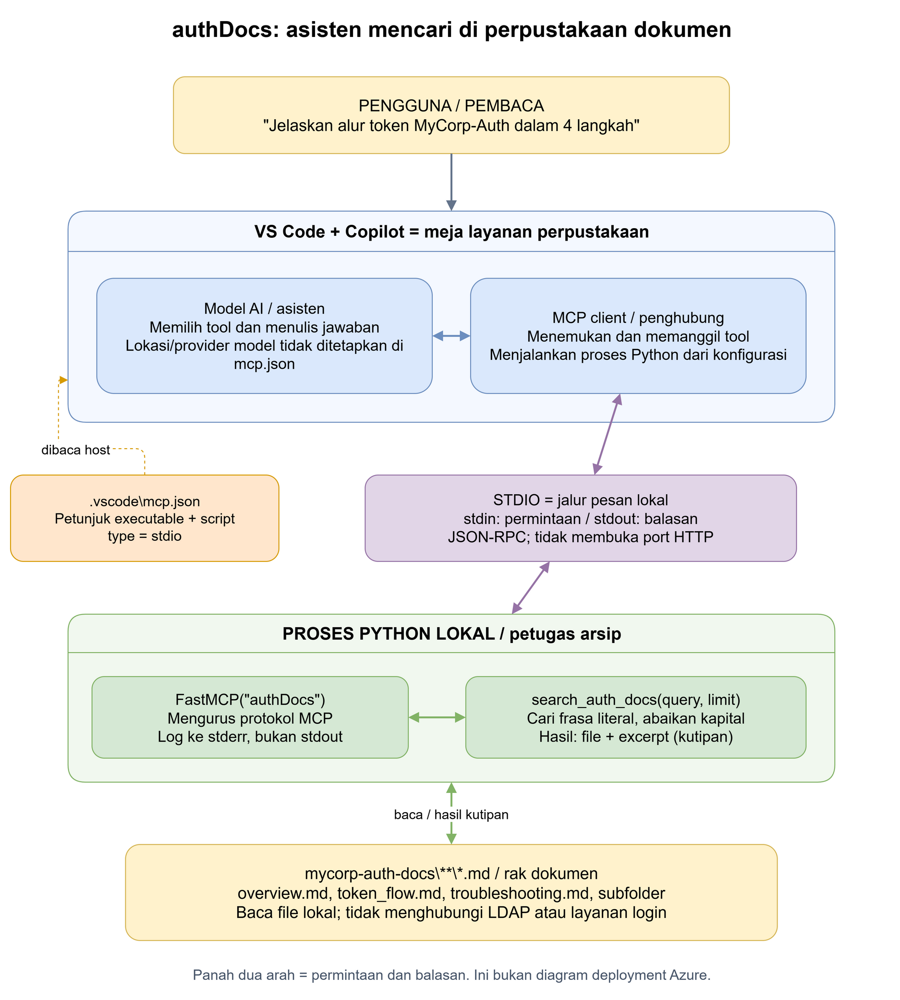
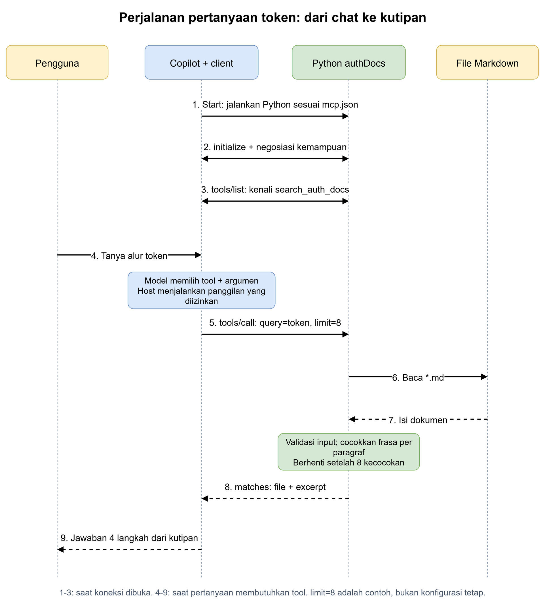

1. Masalah apa yang diselesaikan?
Model AI, yaitu perangkat lunak yang menyusun jawaban dari konteks yang diterimanya, tidak otomatis membaca seluruh folder Anda. Ketika ditanya tentang MyCorp-Auth, ia membutuhkan cara untuk memperoleh informasi yang relevan dari dokumentasi.
MCP (Model Context Protocol) adalah aturan komunikasi agar aplikasi AI dapat memakai fungsi dari program lain. Di sini, aturannya memungkinkan Copilot meminta program Python mencari dokumen. Python adalah bahasa pemrograman yang menjalankan petugas pencari tersebut.
Mengirim pertanyaan membuat Copilot dapat memilih pencarian. Pencarian menghasilkan kutipan. Kutipan itulah yang digunakan model untuk menyusun jawaban, bukan sekadar mengandalkan pengetahuan umum.
authDocs bukan layanan login MyCorp-Auth. Server ini hanya membaca dokumentasi tentang login dan token. Ia tidak menerbitkan token, tidak memeriksa password, dan tidak menghubungi LDAP.2. Kenali para pemainnya
| Istilah | Arti pada proyek ini | Di perpustakaan |
|---|---|---|
| Host | Aplikasi yang menampung pengalaman AI: VS Code dan Copilot. | Meja layanan tempat pembaca bertanya. |
| Model AI | Memilih tool yang relevan dan menyusun jawaban dari hasilnya. Bukan kode Python server ini. | Asisten yang memahami pertanyaan dan menjelaskan hasil arsip. |
| MCP client | Bagian penghubung di host yang berkomunikasi dengan server MCP. | Penghubung yang mengantar formulir ke petugas arsip. |
| MCP server | Program Python authDocs yang menyediakan fungsi pencarian. | Petugas arsip yang tahu cara membaca rak dokumen. |
| Tool | Fungsi yang dapat dipanggil: search_auth_docs(query, limit). | Layanan "carikan kutipan dengan frasa ini". |
| FastMCP / SDK | Pustaka dari paket mcp. SDK adalah kumpulan kode bantu; FastMCP mengurus protokol dan pendaftaran tool. | Perlengkapan petugas untuk menerima formulir standar. |
| Markdown | Format dokumen teks berakhiran .md; tanda sederhana membentuk judul dan tabel. | Buku-buku di rak arsip. |
| JSON | Format data dengan pasangan nama dan nilai, misalnya {"limit": 8}. | Formulir dengan kolom bernama jelas. |
| JSON-RPC | Aturan pesan untuk meminta fungsi dijalankan dan mengirim hasil atau error, memakai JSON. | Formulir resmi dengan nomor permintaan dan jenis layanan. |
| stdio | Jalur masukan dan keluaran standar suatu proses, dipakai untuk pesan lokal. | Jalur antarformulir langsung antara meja layanan dan arsip. |
| Proses anak | Program terpisah yang dijalankan host; di sini executable Python. | Petugas arsip yang ditugaskan oleh meja layanan. |
| .venv | Lingkungan Python terpisah yang menyimpan interpreter dan paket untuk demo ini. | Perlengkapan khusus petugas arsip ini, tidak tercampur dengan petugas lain. |
Istilah dalam buku, bukan komponen server: JWT adalah token autentikasi berisi klaim bertanda tangan; LDAP adalah protokol untuk mengakses direktori identitas. Dalam analogi kita, keduanya adalah topik yang tertulis di buku. Membaca buku tentang JWT atau LDAP tidak berarti petugas arsip menjalankan layanan tersebut.
3. Arsitektur yang benar-benar dipakai
Diagram ini mengikuti konfigurasi workspace dan skrip mcp_auth_docs_starter.py. Warna mengelompokkan peran, bukan layanan cloud. Tidak ada Azure, database, atau server HTTP yang diperlukan oleh kode pencarian ini.

Bagian lokal
VS Code menjalankan Python. Python membaca file di komputer Anda, lalu mengirim hasil lewat stdio. Server ini tidak membuka port jaringan.
Bagian model AI
Konfigurasi ini tidak menentukan lokasi atau penyedia model. Copilot dapat mengirim konteks tool ke model sesuai konfigurasi dan kebijakannya. "Server lokal" tidak otomatis berarti seluruh percakapan berjalan offline.
Analogi: petugas arsip dan raknya berada di lokasi Anda. Itu tidak membuktikan bahwa asisten penulis jawaban juga bekerja sepenuhnya tanpa koneksi ke luar.
4. Mengapa konfigurasi ini diperlukan?
Host membutuhkan alamat program yang harus dijalankan. Tanpa petunjuk itu, ia tidak tahu petugas arsip mana yang menyediakan pencarian. Konfigurasi ada di .vscode\mcp.json pada root workspace.
{
"servers": {
"authDocs": {
"type": "stdio",
"command": "${workspaceFolder}\\copilot-fundamentals-training\\demos\\copilot-techniques\\mcp-auth-docs-id\\.venv\\Scripts\\python.exe",
"args": [
"${workspaceFolder}\\copilot-fundamentals-training\\demos\\copilot-techniques\\mcp-auth-docs-id\\mcp_auth_docs_starter.py"
]
}
}
}| Bagian | Mengapa ada / apa efeknya? |
|---|---|
servers.authDocs | Mendaftarkan satu server dengan nama authDocs agar host dapat mengenalinya. |
type: "stdio" | Memilih komunikasi proses lokal, bukan alamat website. |
command | Menentukan executable Python di .venv; Python tersebut harus sudah tersedia. |
args | Memberi Python nama skrip yang harus dijalankan. Tidak ada argumen test, sehingga skrip masuk mode server. |
${workspaceFolder} | Variabel yang diganti VS Code dengan folder workspace. Pada sesi ini nilainya C:\clients\Organization\demo\fundamental. |
\\ | Penulisan satu karakter backslash di string JSON. Ini bukan dua folder pemisah. |
copilot-fundamentals-training langsung sebagai root workspace, awalan path pada konfigurasi ini perlu disesuaikan. Alamat rak harus dihitung dari pintu masuk perpustakaan yang benar.Tiga jalur komunikasi yang jangan tertukar
| Jalur | Isi | Analogi |
|---|---|---|
| stdin | Permintaan MCP masuk ke Python. | Formulir masuk ke petugas arsip. |
| stdout | Balasan protokol keluar dari Python. | Formulir hasil resmi. |
| stderr | Log, yaitu catatan diagnostik untuk memeriksa masalah. | Buku catatan petugas, terpisah dari formulir hasil. |
Menambahkan print("server siap") ke stdout dalam mode server mencampur catatan bebas dengan protokol. Client dapat gagal membacanya. Kode memakai logging ke stderr agar jalur resmi tetap bersih.
Port: tidak ada port TCP/HTTP untuk server ini. HTTP adalah protokol web; bukan transport yang dipilih konfigurasi. Jangan mencoba memvalidasi stdio dengan membuka localhost:8000.
5. Ikuti perjalanan satu pertanyaan
Client perlu mengenal kemampuan server sebelum memakainya. Setelah itu, model dapat memilih fungsi yang sesuai. Diagram memisahkan tahap membuka koneksi dari tahap menjawab pertanyaan.

- Host menjalankan Python. Membaca konfigurasi menghasilkan proses server yang dipakai client. Meja layanan menugaskan petugas arsip dengan perlengkapan yang benar.
- Client dan server membuka sesi. Pesan
initialize, yaitu permintaan pembuka, dipakai untuk menyepakati versi protokol dan kemampuan. SDK mengurus detail pesan dan notifikasi pembuka. Keduanya menyepakati format formulir. - Client menemukan tool.
tools/listmeminta daftar fungsi, deskripsi, dan bentuk argumennya. Hasilnya membantu host/model mengenalisearch_auth_docs. Meja layanan membaca daftar jasa petugas arsip. - Anda mengirim pertanyaan tentang token. Pertanyaan ini menjadi konteks untuk model. Pembaca meminta penjelasan buku tentang token.
- Model mengusulkan pemanggilan tool. Sebagai contoh,
query="token", limit=8. Host/client mengeksekusinya jika tool tersedia dan izin mengizinkan.tools/calladalah pesan untuk menjalankan fungsi. Asisten mengisi formulir pencarian, penghubung menyerahkannya. - Python mencari paragraf. Membaca Markdown menghasilkan kandidat kutipan, lalu pencocokan memilih yang memuat frasa. Petugas membuka buku dan menandai paragraf yang cocok.
- Server mengembalikan hasil terstruktur. Fungsi mengembalikan
matchesyang berisi nama file dan kutipan. SDK membungkusnya dalam respons MCP. Petugas mengembalikan potongan bacaan beserta nama bukunya. - Copilot menyusun jawaban. Model menggunakan kutipan sebagai konteks untuk merangkum empat langkah. Jika kutipan belum cukup, ia dapat mencari lagi. Asisten menjelaskan bacaan, bukan mengarang isi rak yang belum dibuka.
6. Apa yang dilakukan fungsi pencarian?
Skrip yang dipakai konfigurasi mendaftarkan fungsi melalui @mcp.tool(). Tanda ini adalah dekorator: instruksi Python untuk menjadikan fungsi tersedia sebagai tool. Ini seperti memasukkan layanan pencarian ke katalog jasa arsip.
- Rapikan dan validasi input. Spasi di awal/akhir query dibuang. Query kosong ditolak dengan
ValueError, yaitu kesalahan nilai masukan. Limit harus 1 sampai 20, default 5. Ini mencegah formulir tanpa kata pencarian atau permintaan kutipan di luar batas. - Temukan rak dokumen.
DOCS_DIRdihitung dari lokasi skrip, bukan folder terminal. Jika folder tidak ada, fungsi menghasilkanFileNotFoundError. Petugas membutuhkan rak yang nyata sebelum mencari. - Susuri file.
rglob("*.md")mencari file Markdown sampai ke subfolder; daftar diurutkan berdasarkan path. Petugas memeriksa rak dan bagian-bagiannya secara berurutan. - Baca dan pisahkan paragraf. UTF-8 adalah cara mengubah byte menjadi teks. Isi file dipisahkan pada baris kosong dengan pola
\n\s*\n. Petugas menilai paragraf, bukan seluruh buku sebagai satu hasil. - Cocokkan frasa literal.
casefold()membuat perbandingan tidak peka huruf besar/kecil. Query bukan regex, yaitu bahasa pola pencarian. JadiTOKENbisa cocok dengantoken, tetapi query tidak dipahami sebagai pertanyaan bahasa alami. - Batasi hasil. Setiap paragraf cocok menambah satu pasangan
filedanexcerpt. Setelah limit tercapai, fungsi berhenti. Petugas berhenti ketika jumlah kutipan yang diminta sudah terpenuhi.
Contoh bentuk input dan hasil
Contoh berikut menggambarkan argumen tool dan nilai kembalian fungsi, bukan seluruh paket pesan JSON-RPC. Kutipan berasal dari dokumen yang tersedia; urutan aktual mengikuti file yang dipindai.
// Argumen yang dapat dipilih model untuk pertanyaan kita
{"query": "token", "limit": 8}
// Contoh satu hasil; hasil aktual dapat memuat paragraf lain
{
"matches": [
{
"file": "token_flow.md",
"excerpt": "The following describes how a client obtains and refreshes authentication tokens."
}
]
}file adalah lokasi relatif terhadap folder dokumentasi. excerpt berarti kutipan paragraf. matches adalah daftar kecocokan; tidak ada kecocokan menghasilkan {"matches": []}, bukan kegagalan server.
Contoh hitungan: limit bukan jumlah buku
Awal panggilan : jumlah kutipan = 0, limit = 8
Paragraf cocok : jumlah kutipan = 1
...
Paragraf cocok : jumlah kutipan = 8 -> berhenti
Delapan kutipan boleh berasal dari satu file yang sama.
Panggilan berikutnya memulai pencarian baru dari awal.Jika sebuah file awal sudah menghasilkan delapan kecocokan, file berikutnya tidak diperiksa lagi. Jadi pencarian token dengan limit kecil bisa berhenti sebelum mencapai semua isi token_flow.md. Mencapai limit berarti jatah kutipan terpenuhi, bukan semua dokumen relevan sudah dibaca.
| Bayangan yang keliru | Perilaku kode sebenarnya |
|---|---|
| Limit 8 berarti delapan dokumen terbaik. | Maksimal delapan paragraf cocok, mengikuti urutan path dan paragraf. |
| Server memahami semua sinonim dan makna pertanyaan. | Server mencari frasa literal. Model yang memilih frasa dan menyusun jawaban. |
| Server sudah mengindeks dan menyimpan semua isi. | Kode membaca file saat pencarian; tidak ada indeks vektor atau cache hasil. |
| Query "token" pasti mengembalikan seluruh alur. | Hanya paragraf yang mengandung frasa tersebut. Bagian langkah lain bisa terlewat. |
Intinya: petugas menandai frasa pada paragraf sesuai urutan rak. Ia bukan penilai otomatis buku terbaik.
7. Apa yang tidak dilakukan server ini?
- Tidak menjalankan login. Endpoint seperti
/logindan/refreshadalah topik di dokumen, bukan route yang dibuat skrip MCP ini. - Tidak sama dengan scaffold Flask lama. Skrip di folder induk berisi kerangka aplikasi web Flask dengan endpoint
/authdocyang belum lengkap. Flask adalah framework web Python. Konfigurasi saat ini menunjuk ke skrip FastMCP di folder modul ini, bukan scaffold tersebut. - Tidak membutuhkan API key model di Python. API key adalah kredensial akses layanan. Kode ini hanya memakai paket MCP dan file lokal; akses model menjadi urusan host.
- Tidak menjamin isi dokumen benar. Ada perbedaan rute refresh antar dokumen dan detail yang disamarkan. Model harus menyatakan ketidakpastian, bukan menebak data yang hilang.
- Tidak membuat sumber informasi otomatis aman. Dokumen bisa salah atau memuat instruksi berbahaya. Perlakukan kutipan sebagai data, bukan perintah yang boleh mengambil alih perilaku asisten.
- Tidak mengisolasi seluruh izin proses. Fungsi ini hanya membaca folder dokumentasi, tetapi proses Python tetap berjalan dengan izin pengguna yang menjalankannya. Jangan menaruh rahasia di sumber yang akan dikirim ke model.
8. Bagaimana membuktikan MCP bekerja?
Ada dua pemeriksaan berbeda. Yang pertama menguji petugas mencari buku. Yang kedua menguji seluruh perjalanan dari meja layanan sampai jawaban.
A. Uji fungsi pencarian, tanpa koneksi MCP
Di VS Code, buka terminal PowerShell pada root workspace C:\clients\Organization\demo\fundamental, lalu jalankan:
& ".\copilot-fundamentals-training\demos\copilot-techniques\mcp-auth-docs-id\.venv\Scripts\python.exe" `
".\copilot-fundamentals-training\demos\copilot-techniques\mcp-auth-docs-id\mcp_auth_docs_starter.py" `
test --query token --limit 2Argumen test membuat skrip mencetak JSON, lalu selesai. Tanpa test, skrip menjalankan transport MCP. Hasil matches membuktikan Python, paket, dan akses dokumen berjalan, bukan handshake client MCP.
misc\support.md. Ini sesuai pencarian rekursif dan limit dua paragraf. Tool MCP juga telah berhasil dipanggil pada sesi chat ini; keberhasilan itu tidak menjamin semua sesi berikutnya otomatis tersambung.Analogi: meminta petugas mencari langsung membuktikan rak bisa dibaca, tetapi belum membuktikan penghubung di meja layanan bekerja.
B. Uji dari Copilot sampai server
- Buka konfigurasi workspace
.vscode\mcp.json. Gunakan kontrol Start pada server jika tersedia, atau buka Command Palette dengan Ctrl+Shift+P, cari MCP: List Servers, lalu pilih authDocs. Nama kontrol dapat berbeda menurut versi VS Code. - Jika diminta mempercayai konfigurasi, tinjau command dan script terlebih dahulu. Menyetujui konfigurasi berarti mengizinkan host menjalankan program tersebut.
- Di Copilot Chat, gunakan mode yang mendukung tool dan pastikan tool authDocs diaktifkan melalui pemilih tools. Kirim pertanyaan yang sama: "Gunakan search_auth_docs untuk menjelaskan alur token MyCorp-Auth dalam 4 langkah."
- Periksa pemanggilan
search_auth_docs, yang bisa tampil sebagaiauthDocs-search_auth_docs. Lihat argumen dan hasilnya. Nama tampilan dapat diberi awalan server oleh host. - Pastikan jawaban mengambil informasi dari kutipan. Jika langkah tidak lengkap, minta pencarian lanjutan dengan frasa yang lebih spesifik; jangan menganggap semua dokumen sudah terbaca.
Hasil yang diharapkan: terlihat panggilan tool, argumen pencarian, hasil kutipan, kemudian jawaban. Itulah bukti alur penuh. Formulir benar-benar sampai ke arsip, hasilnya kembali, dan asisten menjelaskan buku yang diterima.
Anda tidak perlu menjalankan server di terminal secara terpisah sebelum memilih Start. Untuk stdio ini, host menjalankan proses yang terhubung langsung kepadanya; proses manual lain tidak otomatis menjadi server yang dipakai host.
9. Jika error, lihat di bagian mana alurnya putus
Tabel ini adalah panduan diagnosis, bukan daftar error yang dipastikan terjadi pada komputer Anda. Pilih gejala yang benar-benar terlihat, lalu uji lapisan yang relevan.
| Gejala | Kemungkinan sebab dan analogi | Tindakan dan bukti perbaikan |
|---|---|---|
| Python tidak bisa dijalankan. | Path salah, root workspace berubah, atau executable .venv belum ada. Petugas diarahkan ke alamat yang tidak ada. | Bandingkan command dengan lokasi nyata. Periksa kembali bagian konfigurasi, lalu jalankan uji A. |
ModuleNotFoundError: mcp | Paket belum terpasang pada Python yang dipilih. Petugas tidak membawa perlengkapan formulir. | Gunakan Python .venv yang sama untuk memasang requirements.txt melalui python -m pip install -r, lalu ulangi uji A. |
FileNotFoundError untuk folder dokumen. | Folder sumber hilang atau struktur direktori berubah. Rak arsip tidak ditemukan. | Pastikan mycorp-auth-docs adalah folder saudara modul ini. Rumus DOCS_DIR mengambil parent dua tingkat dari lokasi file skrip. Ulangi uji A. |
| Server langsung berhenti atau protokol gagal dibaca. | Periksa log: bisa ada exception, output print bebas, atau argumen test pada konfigurasi. Formulir resmi tercampur catatan atau petugas selesai terlalu awal. | Lihat output server melalui kontrol server/Show Output yang tersedia di VS Code. stdout harus khusus MCP; konfigurasi args jangan memuat test. Ulangi uji B. |
| Server hidup tetapi jawaban tanpa tool. | Tool belum aktif, izin belum disetujui, atau model tidak memilihnya. Asisten menjawab tanpa mengirim formulir ke arsip. | Aktifkan tool, periksa izin, minta penggunaan search_auth_docs secara eksplisit, lalu periksa jejak panggilan di uji B. |
matches kosong. | Tidak ada frasa literal yang cocok. Petugas tidak menemukan kata itu, bukan berarti rak rusak. | Coba frasa dari sumber, misalnya token. Periksa aturan pencarian. |
| Kutipan ada, tetapi alur tidak lengkap. | Limit terpenuhi lebih awal atau paragraf lain tidak mengandung query. Jatah kutipan habis sebelum buku berikutnya. | Gunakan query lebih spesifik atau pencarian lanjutan; limit maksimal 20. Verifikasi setiap langkah terhadap dokumen. |
| Browser localhost:8000 tidak terhubung. | Ini stdio, bukan server web. Pembaca mendatangi loket yang tidak disediakan. | Gunakan uji MCP, bukan browser HTTP. Lihat jalur stdio. |
Diagnosis yang baik: periksa apakah petugas bisa membaca rak, lalu apakah formulir bisa diantar, baru apakah jawaban memakai kutipan yang benar.
10. Ingat enam kalimat ini
- VS Code dan Copilot adalah tempat Anda bertanya.
- Model memilih pencarian, client mengirim permintaan yang diizinkan.
- Server Python menyediakan fungsi pencarian, bukan kecerdasan model.
- Stdio membawa pesan lokal tanpa port HTTP.
- Dokumen menghasilkan kutipan; model memakai kutipan untuk menjawab.
- Untuk membuktikan MCP bekerja, lihat panggilan tool dan hasilnya, bukan hanya jawaban akhir.
Sumber dan file yang bisa dibuka
- Konfigurasi server pada root workspace.
- Implementasi yang ditunjuk konfigurasi dan dependensi MCP.
- Panduan praktik modul.
- Dokumen alur token, overview, dan troubleshooting.
- Sumber arsitektur draw.io dan sumber diagram urutan draw.io.
Untuk mengedit diagram, buka draw.io Desktop, pilih File > Open From > Device atau menu Open yang tersedia, lalu pilih file .drawio. Diagram memakai bentuk generik karena sistem ini bukan arsitektur Azure.
Halaman dan PNG disimpan lokal, tanpa font, pustaka, atau renderer dari CDN. Untuk berbagi, sertakan HTML beserta folder diagrams. Tautan ke kode sumber memerlukan struktur workspace aslinya. Gunakan menu cetak browser untuk menyimpan panduan menjadi PDF bila diperlukan.